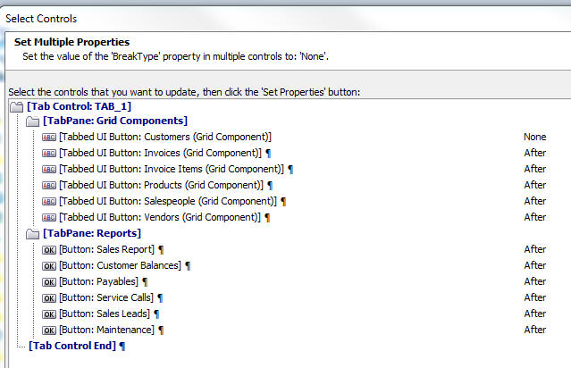

Tabbed UI and Page Layout Component Builders
The TabbedUI and PageLayout Component builders have been improved. You can now paste a property to multiple controls at once. You can copy controls from one component to another. You can search for a control with a specific property value, and a toolbar button allows you to quickly toggle the 'Break' after a control.The image below shows the new icons that appear above the selected controls in the Tabbed UI and PageLayout builders.
The image shows these new icons:
- 'Eye dropper' - allows you to set properties on multiple controls. (Described in more detail below).
- 'Search' - allows you to find a control with a specific property value. Also allows you to select all controls with a specific property value.
- 'Paragraph' - allows you to quickly toggle the break after a control from on to off and vice versa.
- 'Menu' - brings up a menu of additional options which includes the ability to copy controls to the clipboard and then paste them in another component.
The 'Eye dropper' icon allows you to paste the currently selected property in the Property Grid to selected controls. For example say that you want to change the width of all buttons in the Tabbed UI to 2 inches.
Here is how you would do this:
- Set the inline style of one of the buttons: width: 2in;
- Click the 'Eye dropper' icon.
- This will bring up a dialog showing all of the controls in the component and the current value each has for the selected property.
- Select the control to which you want to paste the property.
